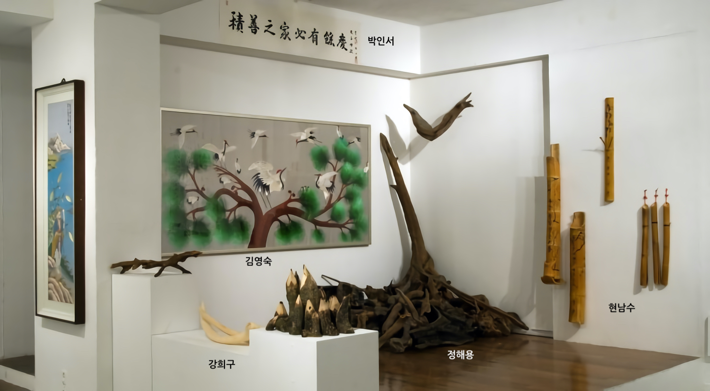
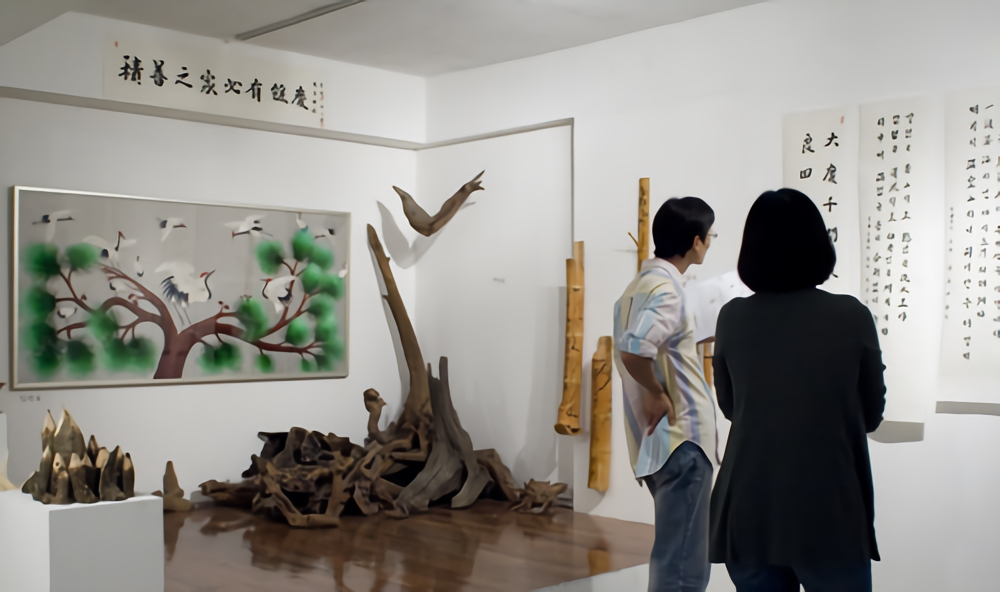

석수동네傳-석수예술
2008_0919 ▶ 2008_1002 / 일요일 휴관
 (1).png)
클로징 파티 / 2008_1002_목요일_06:00pm
참여작가
강희구_김선희_김영숙_박인서_윤병식 이유순_이준호_정해용_최우석_현남수
주최 / 2008 석수아트프로젝트 실행위원회
주관 / 스톤앤워터 전시팀
후원 / 한국문화예술위원회_안양시
관람시간 / 10:30am~06:30pm / 일요일 휴관
보충대리공간 스톤앤워터 SUPPLEMENT SPACE STONE & WATER
경기도 안양시 만안구 석수2동 286-15번지 2층
Tel. +82.(0)31.472.2886
생활 속의 예술 - 취미의 즐거움을 전(傳)하기 위해 전(展)하는 기획 프로젝트
● 석수동은 예부터 석수쟁이들(석공)이 모여 살았다고 전해진다. 안양예술공원 초입 바위에 새겨진 마예종과 삼막천에 놓여진 만안교를 통해 그 오랜 익명의 예술가들을 만날 수 있다. 오늘날 석수동은 어떤 쟁이들이 모여 살고 있을까? "먹고 살기도 어려운데 뭔 놈의 예술이여" "예술이 뭐 별건감? 사는 게 예술이지"와 같이 상반된 감성 언어 속에서 오늘날 '기체화된 예술'의 에너지를 느낄 수 있다.
● 굳이 동네의 전설을 들먹이지 않더라도 어느 동네나 그러하듯이 노래 잘하는 사람, 그림 잘그리는 사람, 글씨 잘 쓰는 사람, 고상하고 독특한 취미를 가진 사람 한둘씩은 있게 마련이다. 낯설고 설익은 스톤앤워터라는 공간을 6년 동안 줄곧 지켜보며 우연히 마주치거나 때로는 찾아오셔서 이런저런 예술 이야기를 풀어 놓으시는 분들을 여럿 만나게 되었다. 그리고 우리 주변에, 정확하게 표현하면 이곳 석수동에 '진짜 예술가'들이 살고 있음을 알게 되었다. 그들은 사장님, 원장님, 식당 아줌마, 선생님, 아저씨, 어르신 등 다양한 직함 속에 묻혀 있었다. 이렇듯 생계와 취미 사이를 오가며 '생활 속의 예술'을 일구어내는 전설속의 쟁이들이 바로 그들이다.
● 이렇듯 이번 전시의 참여자들은 녹록하지 않은 삶 속에서 취미로 시작한 일들이 차곡히 쌓여 그들의 삶의 궤적 만큼이나 연륜 있는 전문가가 되어 있었다. 호기심에서 관심으로, 열정에서 몰입으로 가는 '취미의 즐거움' 그 경지에 오르신 분들을 만나면 우리 또한 즐겁다. 이 사적인 '취미의 즐거움'을 공적인 장소에서 나누고자 했을 때 다들 쑥스러워하시거나 남세스러워 하셨다. 어렵사리 마련된 이번 전시는 우리 동네 예술가를 소개하고 작품을 보여주는 것에서 나아가 그 즐거움까지 전달하려고 한다. 결국 『석수동네傳-석수예술』展은 '사적인 취미의 영역을 공적인 영역으로 옮겨 보여주기' 이다. 다시 말해 생활 속의 예술 - 취미의 즐거움을 전(傳)하기 위해 전(展)하는 기획 프로젝트인 것이다. 이번 전시를 통해 또 다른 석수동 예술가와의 만남, 그리고 이들과 소통하는 과정에서 새로운 전염과 전이가 발생하여 우리 모두의 삶에 활기가 넘치기를 기대한다.
강희구 (선경건설 대표. 51세) ● 토목 현장에서 수집한 돌과 나무들을 자신만의 독특한 미적 감수성으로 다듬는 작업을 해왔다. 이번 전시에서는 오래된 감나무를 깎아 세운 설치물, 그리고 주둥이가 붙은 듯한 두 마리의 새와 도마뱀 형상의 나뭇가지를 출품했다.
김영숙 (고향집 대표. 48세) ● 젊은 시절 화장품 가게를 운영했었고 지금은 석수동에서 음식점을 하고 있다. 오래전부터 자수를 해왔고 서예나 뜨개질과 같은 다른 취미도 있는데, 새로운 무언가를 배우는 것은 언제나 즐겁다고 한다. 이번 전시에서는 낚시를 하는 강태공의 모습과 평화와 장수의 상징인 학을 소재로 하여 만든 자수를 선보인다.
박인서 (전 여주부동산 대표, 77세) ● 동네에서 가장 연장자로 해마다 '立春大吉'을 써서 나누고 상량문, 가훈 등 동네 사람들을 위한 글씨들을 많이 써오셨다. 보통 집안의 화목이나 사업의 번창 등의 내용이 많다. 이번 전시에서는 교훈이 될 수 있는 내용들과 오래된 한시들을 쓴 서예 작품들을 볼 수 있다.
정해용 (석수유통 대표, 63세) ● 주식회사 석수유통의 대표로 일주일에도 몇 번씩 틈나는 대로 산에 오른다. 석수시장 빈 점포에 10여년 동안 고목을 수집해왔다. 주로 소양강으로 떠내려 오는 오래된 나무 뿌리들이다. 특별히 가공하지 않고 쌓여진 나무 뿌리를 보는 것 자체만으로도 감흥이 느껴진다.
현남수 (낙원식당 대표, 61세) ● 항상 하회탈 같은 미소를 머금은 현남수님은 맛있기로 소문난 고깃집을 운영하면서 동네 통장일을 맡아 하신다. 그리고 가게 지붕 위에 대롱대롱 매달인 박을 보면 소박한 고향의 멋이 느껴지기도 한다. 원래의 대나무에 약간의 변형을 가해 옷걸이나 수납통을 만드는데 이번 전시에서는 손님들의 편의를 위해 옷걸이로 쓰이던 것을 선보인다.

김선희 (큰별 어린이집 교사. 27세) ● 어린이집 교사로 일하고 있는 김선희는 그리는 것의 즐거움을 누리고 사는 사람이다. 동생인 작가 김선애가 그녀에게 많은 도움을 준다고 한다. 일상에서 보았던 인상적인 것들, 예를 들어 시장에 있는 스타킹 묶음, 마늘 묶음, 몇 송이의 꽃들이 작품을 위한 소재가 된다.
.png)
윤병식 (우일음악학원 대표. 37세) ● 석수동에서 음악학원을 운영하면서 가끔 애니메이션 작업을 하는 사람들과 한팀이 되어 배경이 되는 그림을 그린다. 이번 전시에서는 일본 만화의 배경을 그린 세 작품을 볼 수 있는데 이는 그의 아내를 위한 선물이기도 하다.
.png)
이유순 (중앙미용실 원장, 54세) ● 석수동에서 가장 오래된 미용실을 운영한다. 한달에 한번 사진 동호회 사람들과 촬영을 위한 여행을 가고 안양대학교 평생교육원에서 사진을 전문적으로 배우기도 했다. 주로 자연의 섬세한 아름다움을 보여주는 사진을 많이 찍고 석수시장내 구석 구석을 사진으로 담기도 했다.
.jpg)
이준호 (시와 그림이 있는 마을 촌장. 48세) ● 석수동의 유명한 액자집 아저씨이다. 액자 만드는 일 이외에도 버려진 물건들을 수집해서 시를 쓰고 그림을 그리고 생활 폐품들을 이용해 독특한 작품을 만들어내는 등 다재다능한 분이다. 석수시장의 궂은일들을 마다않고 묵묵히 처리하는 일꾼이기도 하다.
.png)
최우석 (일원기계주식회사 이사. 49세) ● 고등학교 때 미대 진학의 꿈은 포기했지만 여전히 그림 그리기를 좋아한다. 제과점용 과자의 포장기계를 디자인하고 설계하는 일을 오랫동안 해왔다. 이번 전시에서는 초기 아이디어 스케치부터 실제 설계도면, 그리고 포장된 과자까지 디자인의 전 과정을 보여준다.
.jpg)

■ 보충대리공간 스톤앤워터